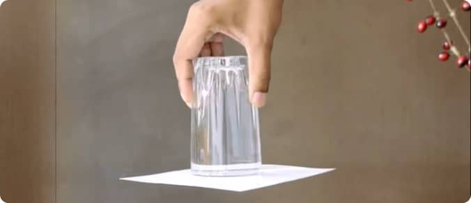

Science isn't limited to labs—it's all around you, waiting to be discovered! At the Science Discovery Museum, we believe in the power of learning by doing, and you can take that excitement home with these simple and engaging experiments. Perfect for curious minds of all ages, these activities use everyday materials to unlock the mysteries of science.
Step into our dynamic interactive spaces, where science comes alive through hands-on exploration!
What You'll Learn: Understand how solutions and evaporation lead to crystal formation.
What You'll Learn: Discover how light refracts and splits into different colors, just like a real rainbow!
What You'll Learn: Explore density and chemical reactions while creating a mesmerizing display.
What You'll Learn: Understand how solutions and evaporation lead to crystal formation.